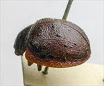
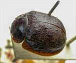
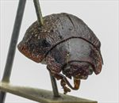
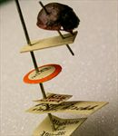
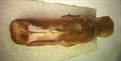
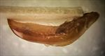

Click on images to enlarge
{kind=link}

Fig. 1. Paropsis inops type specimen, lateral view
{kind=link}

Fig. 2. Paropsis inops type specimen, dorsal view
{kind=link}

Fig. 3. Paropsis inops type specimen, anterior view
.jpg){kind=link}

Fig. 4. Paropsis inops type specimen and labels
{kind=link}

Fig. 5. Paropsis inops (not type specimen) aedeagus, dorsal view
{kind=link}

Fig. 6. Paropsis inops (not type specimen) aedeagus, lateral view
{kind=link}
Fig. 7. Paropsis inops, description
Name
Paropsis inops Blackburn, 1897
Corresponds to
Diagnosis and Notes
Blackburn (1897) deals with P. inops as part of his 'subgroup iv' (i.e., those species without "strongly marked characters", and whose greatest height is considerably in front of the middle of the elytral margin). Within that group, he characterises it as:
A. Prothorax distinctly explanate at the sides;
B. Subhumeral depression present;
CC. Elytral verrucae not as in C [i.e., elytral verrucae not concolorous with derm and/or not closely set in regular series and/or not large];
D. The elytral verrucae normal (small and but little elevated);EE. Prothorax widest not much behind middle, not very strongly narrowed in front.
This species is almost certainly Ta169, by comparison with the inops type specimen in the BMNH. The second specimen labelled T. inops in the BMNH, almost identical to the type specimen, has an aedeagus with a shape the same as that of Ta169 and dimensions in the expected range for a specimen of that size.
Type specimen
Location: BMNH
Label data: /“Type” (red-bordered circle)/ “6124 N.S.W. T”/ “Blackburn coll. 1910-236.”/ “Paropsis inops Blackb.”/.
Male; Size: 8.25 (L) x 6.75 (W) x 3.9 (H) mm; A-A: 1.42 mm.
Less densely distributed verrucae compared with T. pictipennis.
------------------------------------------------------------------------
Another specimen of T. inops, in appearance almost identical to the type specimen, has had its aedeagus extracted.
Labels: /“Austral. Ex Blackb.”/ “Jacoby Coll. 1909-28a”/ “inops Blackb.”/.
Size: 8.85 x 7.25 x 4.3 mm; aedeagus: LPE: 3.725 mm, HPE: 1.3 mm, WPE: 1.05 mm.
Original description
Translation of original description (Figure 7) by ChatGPT, 04/2026:
Broadly somewhat oval, very convex, the greatest height (seen from the side) situated before the middle of the elytral margin; less shining; reddish ferruginous, the underside of the body blackish, the verrucae pitchy; the prothorax on each side with a lateral spot and (in some specimens) with a discal spot pitchy; antennae darkened toward the apex. Head closely, somewhat strongly, somewhat rugulosely punctulate. Prothorax broader than long as a little more than 2⅓ to 1, broadened from the apex to a little beyond the middle, transversely impressed behind the apex, closely, scarcely roughly, rather less strongly (at the sides coarsely rugulose) punctulate; sides strongly arcuate, broadly and somewhat flattened; posterior angles rounded. Scutellum fairly smooth. Elytra slightly depressed beneath the humeral callus, behind the base broadly but not distinctly impressed, closely and rather strongly, somewhat in rows (much more so at the sides, less so posteriorly, strongly) punctured; with some verrucae (especially posteriorly) shining and arranged in rows; interstices anteriorly slightly (posteriorly scarcely) rugulose; marginal portion rather broad, separated from the disc by a scarcely continuous groove; the inner margin of the humeral callus scarcely more distant from the suture than from the lateral margin of the elytra. Basal ventral segment rather closely and strongly punctured. Length 4 lines [~8.5 mm], width 3⅕ lines [~6.8 mm].
References
Blackburn, T. 1897, "Revision of the genus Paropsis. Part II", Proceedings of the Linnean Society of New South Wales, vol. 22, 166-189 (page 168).
Copyright © 2026. All rights reserved.